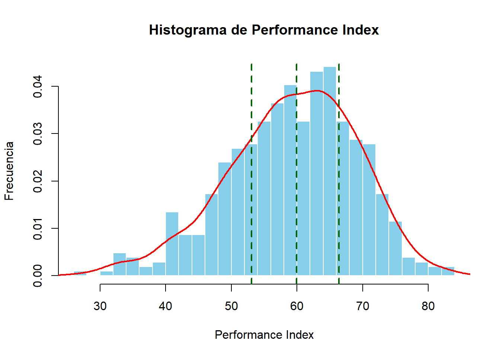
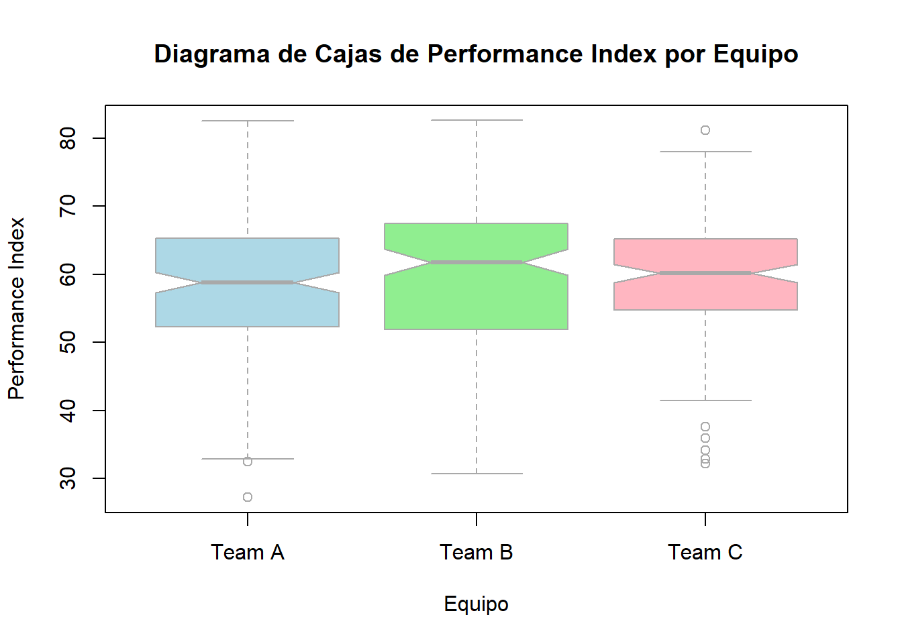
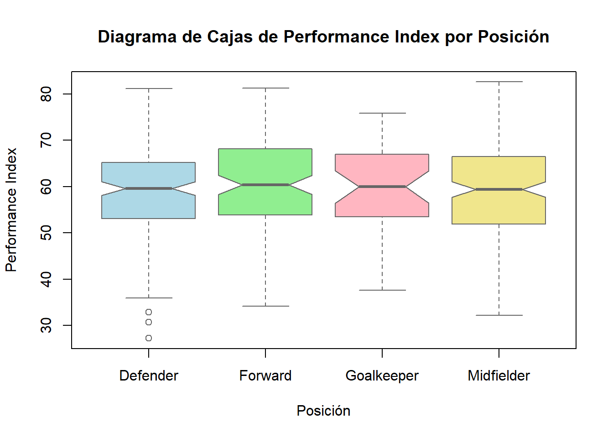
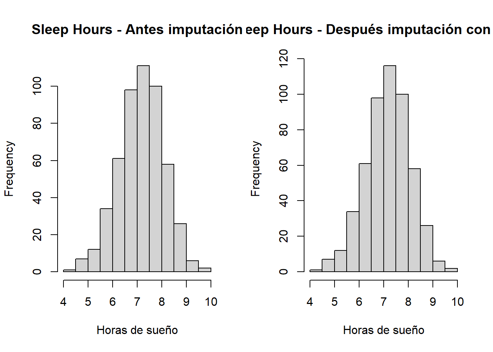
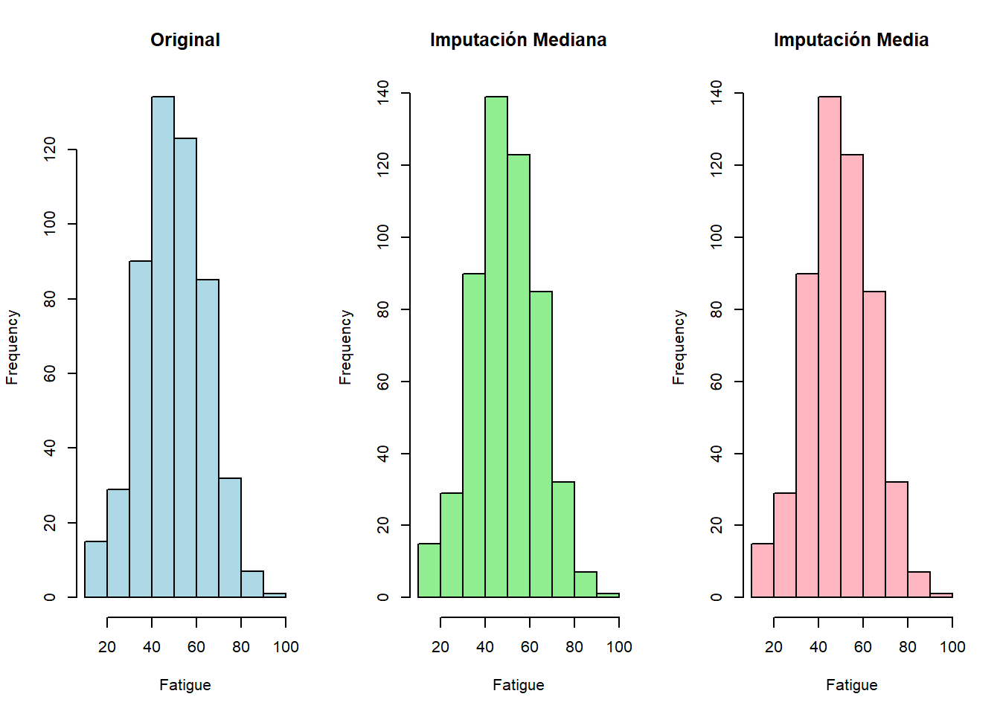
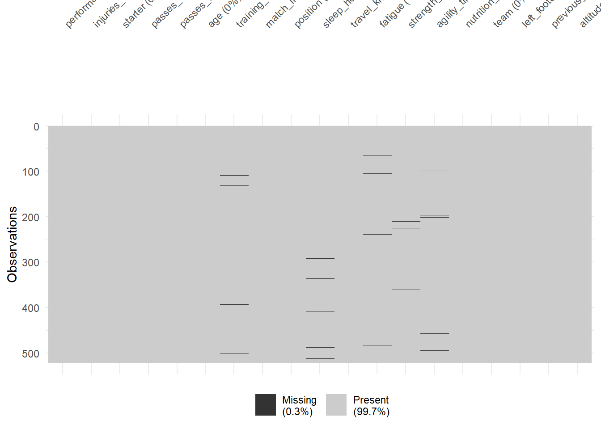
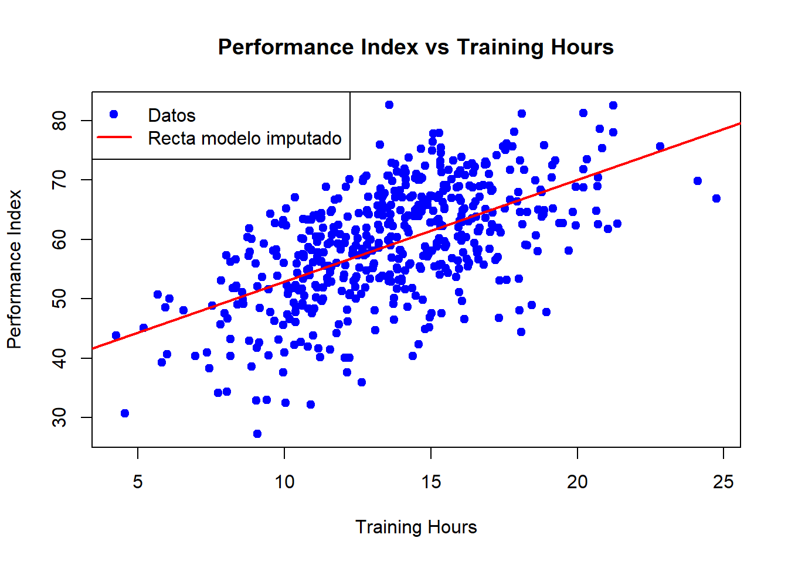

Vamos a realizar un pequeño análisis exploratorio de datos, atendiendo a diferentes aspectos de los mismos.
1. Media, medianay desviación típica
En primer lugar, calcularemos la media, la mediana y la desviación típica del índice de rendimiento de los jugadores.
#Calculamos la media del índice de rendimiento de los jugadoresmedia_performance <-mean(datos$performance_index, na.rm =TRUE)#Devolvemos el valor calculadomedia_performance
[1] 59.23209
#Calculamos la mediana del índice de rendimiento de los jugadoresmediana_performance <-median(datos$performance_index, na.rm =TRUE)#Devolvemos el valor calculadomediana_performance
[1] 59.93
#Calculamos la desviación típica del índice de rendimiento de los jugadoresdtip_performance <-sd(datos$performance_index, na.rm =TRUE)#Devolvemos el valor calculadodtip_performance
[1] 9.784195
Se aprecia una media y una mediana parecidas, lo que parece indicar que la mayoría de jugadores se encuentran en un estado de forma relativamente similar.
2. Histograma de la variable performance_index
#Vamos a hacer un histograma del índice de rendimiento de los jugadores en 20 intervalos# Histograma de performance_index con 20 intervaloshist(datos$performance_index,breaks =20, main ="Histograma de Performance Index", xlab ="Performance Index", ylab ="Frecuencia", col ="skyblue", border ="white",freq =FALSE) lines(density(datos$performance_index),col ="red",lwd =2) cuartiles <-quantile(datos$performance_index, probs =c(0.25, 0.5, 0.75))# Añadimos líneas verticales discontinuas en los cuartilesabline(v = cuartiles, col ="darkgreen", lty =2, # tipo de línea discontinualwd =2) # grosor

En el histograma, podemos apreciar que la variable performance_index sigue una distribución normal.
La línea roja marca la distribución, mientras que las líneas verdes discontinuas marcan los valores de los cuartiles; entre los que se encuentra el 50% de la muestra para esta variable.
Esto complementa a lo que hemos deducido previamente a partir de los datos de la media y la mediana.
3. Distribución de frecuencias relativas
#Vamos a calcular la distribución de las frecuencias relativas de los jugadores por posiciónfrecuencia <-table(datos$position)frecuencia_relativa <-prop.table(frecuencia)# Mostrar la tabla con frecuencias absolutas y relativas (en porcentaje)tabla_frecuencias <-data.frame( Posición =names(frecuencia),Frecuencia =as.vector(frecuencia),Frecuencia_Relativa =round(as.vector(frecuencia_relativa) *100, 2))# Mostrar resultadostabla_frecuencias
Podemos observar que la frecuencia relativa de porteros es mucho menor que la del resto de posiciones. Esto se debe a que en un equipo juega un solo portero para los 3 o 4 defensas, 3 o 4 mediocentros y 2 o 3 delanteros. Por tanto, es lógico obtener ese valor. Caso análogo, pero en menor medida para los delanteros, que suponen un número inferior en la plantilla que los mediocentros y los defensas.
4. Diagrama de cajas de performace_index según el equipo
# Diagrama de cajas de performance_index según teamboxplot(performance_index ~ team, data = datos,main ="Diagrama de Cajas de Performance Index por Equipo",xlab ="Equipo",ylab ="Performance Index",col =c("lightblue", "lightgreen", "lightpink", "khaki"),border ="darkgray",notch =TRUE)

En este boxplot podemos ver que en el equipo B hay una mayor variabilidad de resultados, pues los cuartiles son más grandes que los de los equipos A y B (que tienen niveles más similares de rendimiento). Sin embargo, la mediana del equipo B es claramente mayor que la del resto de equipos.
Esto puede indicar un mayor nivel de algunos jugadores del equipo B con respecto de los jugadores del resto de equipos, pero también entre los jugadores del mismo equipo (mucha diferencia entre jugadores “estrellas” y el resto).
Por último, en el equipo C tienen todos los jugadores un nivel muy similar; lo que podría provocar que el rendimiento medio sea mayor.
5. Gráfico de dispersión entre training_hours y performance_index
#Construimos un gráfico de dispersión entre training_hours y performance_indexplot(datos$training_hours, datos$performance_index,main ="Relación entre horas de entrenamiento y rendimiento",xlab ="Horas de entrenamiento (training_hours)",ylab ="Índice de rendimiento (performance_index)",pch =19, # tipo de punto sólidocol ="steelblue", # color de los puntoscex =1.2) # tamaño de los puntos# Agregar una línea de tendencia (regresión lineal)abline(lm(performance_index ~ training_hours, data = datos), col ="red", lwd =2)
Se aprecia linealidad en el modelo. Hay una clara relación lineal entre las horas de entrenamiento y el índice de rendimiento, apreciando un mayor rendimiento conforme aumentan las horas de entrenamiento.
6. Matriz de correlaciones
#Calculamos la matriz de correlaciones entre variables numéricasdatos_numericos <- datos[, sapply(datos, is.numeric)]# Calcular la matriz de correlacionesmatriz_cor <-cor(datos_numericos, use ="complete.obs")# Mostrar la matriz de correlacionesmatriz_cor
Aquí podemos ver la matriz de correlaciones. Vemos que las variables que presentan más correlación son los pases realizados con éxito y los pases intentados. Otras variables que presentan cierta correlación son el índice de rendimiento con la edad y las horas de entrenamiento.
7. Gráfico de dispersión entre fatiga e índice de rendimiento
#Representamos un gráfico de dispersión entre training_hours y performance_indexlibrary(ggplot2)ggplot(datos, aes(x = fatigue, y = performance_index)) +geom_point(color ="steelblue", size =2) +geom_smooth(method ="lm", color ="red", se =FALSE) +labs(title ="Relación entre fatiga e índice de rendimiento",x ="Fatiga",y ="Índice de rendimiento") +theme_minimal()
`geom_smooth()` using formula = 'y ~ x'
Warning: Removed 5 rows containing non-finite outside the scale range
(`stat_smooth()`).
Warning: Removed 5 rows containing missing values or values outside the scale range
(`geom_point()`).

Parece que hay una relación lineal entre ambas variables. En particular, podemos observar que parece haber una relación que indica una menor índice de rendimiento conforme la fatiga incrementa.
8. Boxplot del índice de rendimiento por posición
#Realizamos un boxplot de performance_index por posicionboxplot(performance_index ~ position,data = datos,main ="Diagrama de Cajas de Performance Index por Posición",xlab ="Posición",ylab ="Performance Index",col =c("lightblue", "lightgreen", "lightpink", "khaki"),border ="gray40",notch =TRUE)
Se aprecian una serie de diferencias entre puestos, que procederemos a desarrollar. En primer lugar, no hay grandes diferencias en lo referente a la media del índice de rendimiento en función de la posición. Por otro lado, vemos que el tercer cuartil de los defensas es más pequeño que el resto, dando a entender que se encuentran más agrupados en esas zonas de rendimiento; destacando menos que en otras posiciones. Además, hay tres outliers con valores muy bajos de rendimiento. Finalmente, el último valor remarcable es el del portero, donde vemos que el “bigote” es de longitud mucho menor que el del resto de posiciones.
9. Valores atípicos en agility_time
# Vamos a identificar los valores atípicos en agility_time # Calculamos los cuartiles y el rango intercuartílicoQ1 <-quantile(datos$agility_time, 0.25, na.rm =TRUE)Q3 <-quantile(datos$agility_time, 0.75, na.rm =TRUE)IQR_value <-IQR(datos$agility_time, na.rm =TRUE)# Límites inferior y superior para detectar atípicoslim_inf <- Q1 -1.5* IQR_valuelim_sup <- Q3 +1.5* IQR_value# Identificamos los valores atípicosoutliers <- datos$agility_time[datos$agility_time < lim_inf | datos$agility_time > lim_sup]# Mostramos resultadosoutliers
[1] NA NA NA NA NA
Vemos que por la regla del rango intercuartílico (IQR) hay 5 valores atípicos, que se corresponden con NA. Es decir, valores no recogidos de esta variable para ciertos jugadores. Vamos a hacer un boxplot para intentar ver más posibles valores atípicos, donde estos hayan sido recogidos.
boxplot(datos$agility_time,main ="Detección de valores atípicos en Agility Time",ylab ="Agility Time",col ="lightblue",border ="gray40")
La conclusión del boxplot es la misma. No hay valores atípicos en la variable agility_time, más allá de los valores no recogidos.
10. Proporción de jugadores zurdos en la base de datos
# Calculamos la proporción de jugadores zurdosproporcion_zurdos <-mean(datos$left_footed ==1, na.rm =TRUE)# Mostramos el resultado en porcentajeproporcion_zurdos *100
[1] 29.17466
Como podemos ver, el 29,17% de los jugadores de la base de datos son zurdos.
2. MANEJO DE VALORES FALTANTES
1. Identificación de variables con valores faltantes
Primero, vemos qué columnas tienen valores NA
# Ver columnas que contienen al menos un NAcolnames(datos)[colSums(is.na(datos)) >0]
Así, vemos que hay 5 valores faltantes en cada una de estas variables.
2. Calculamos la proporción de valores faltantes sobre el dataset completo
# Porcentaje total de NAmean(is.na(datos)) *100
[1] 0.2525508
Es decir, el 0.25% de los valores del dataset son valores faltantes.
3. Resumen de combina las variables con missing y su porcentaje de valores ausentes
# Calcular cantidad y porcentaje de NA por variablena_table <-data.frame(variable =colnames(datos),na_count =colSums(is.na(datos)),na_percent = (1-colMeans(is.na(datos)) *100))# Filtrar solo variables con al menos un NAna_table <- na_table[na_table$na_count >0, ]# Mostrar tablana_table
# Calculamos la media de training_hours ignorando NAmedia_training <-mean(datos$training_hours, na.rm =TRUE)# Imputamos los NA con la mediatraining_hours_imputada <- datos$training_hourstraining_hours_imputada[is.na(training_hours_imputada)] <- media_training# Calculamos de nuevo la media después de imputarnueva_media_training <-mean(training_hours_imputada)# Comprobamos que el valor es el mismomedia_training
[1] 13.69029
nueva_media_training
[1] 13.69029
Con esto, hemos sustituido los valores faltantes de la variable training_hours con la media de los valores de esta variable.
5. Histogramas de sleep_hours antes y después de la imputación por la media
En primer lugar, trabajaremos con la variable sin imputar (con valores faltantes).
# Guardamos una copia de la variable originalsleep_original <- datos$sleep_hours# Calculamos la media sin NAmedia_sleep <-mean(datos$sleep_hours, na.rm =TRUE)
A continuación, trabajaremos con la versión imputada.
# Creamos la versión imputadasleep_imputada <- datos$sleep_hourssleep_imputada[is.na(sleep_imputada)] <- media_sleep
Ahora, podemos desarrollar los histogramas.
# Histogramas antes y despuéspar(mfrow =c(1, 2)) # Mostrar dos gráficos juntoshist(sleep_original,main ="Sleep Hours - Antes imputación",xlab ="Horas de sueño")hist(sleep_imputada,main ="Sleep Hours - Después imputación con media",xlab ="Horas de sueño")

Como podemos ver, no se aprecian diferencias aparentes. Esto se debe al hecho de que, al imputar los valores faltantes por la media, no modificamos la estructura presente de la variable. Así, el único cambio aparente es un aumento de la frecuencia para los valores cercanos a la mediana (asumimos que son los imputados). Sin embargo, como afirmamos, la distribución es la misma.
6. Imputación por la mediana en fatigue y comparación con imputación con la media.
En primer lugar, imputamos los valores por la mediana en la variable fatigue.
# Calculamos la mediana ignorando NAmediana_fatigue <-median(datos$fatigue, na.rm =TRUE)# Crear una nueva variable con la imputaciónfatigue_imputada <- datos$fatiguefatigue_imputada[is.na(fatigue_imputada)] <- mediana_fatigue# Comprobamos que ya no hay NAsum(is.na(fatigue_imputada))
[1] 0
A continuación, hacemos la imputación por la media.
# Calcular la media ignorando NAmedia_fatigue <-mean(datos$fatigue, na.rm =TRUE)# Crear nueva variable imputada por la mediafatigue_imputada_media <- datos$fatiguefatigue_imputada_media[is.na(fatigue_imputada_media)] <- media_fatigue# Comprobar la imputaciónsum(is.na(fatigue_imputada_media))
[1] 0
Ahora, porcedemos a comparar estas nuevas variables creadas.
Para ello, empezaremos comparando estadísticas básicas mediante una tabla
# Media original (ignorando NA)media_original <-mean(datos$fatigue, na.rm =TRUE)# Media tras imputación por medianamedia_median <-mean(fatigue_imputada, na.rm =TRUE)# Media tras imputación por mediamedia_mean <-mean(fatigue_imputada_media, na.rm =TRUE)# Mediana originalmediana_original <-median(datos$fatigue, na.rm =TRUE)# Mediana tras imputación por medianamediana_median <-median(fatigue_imputada, na.rm =TRUE)# Mediana tras imputación por mediamediana_mean <-median(fatigue_imputada_media, na.rm =TRUE)data.frame(Version =c("Original", "Imputación Mediana", "Imputación Media"),Media =c(media_original, media_median, media_mean),Mediana =c(mediana_original, mediana_median, mediana_mean))
Version Media Mediana
1 Original 49.40407 49.3
2 Imputación Mediana 49.40307 49.3
3 Imputación Media 49.40407 49.3
De esta manera, vemos que la imputación por la mediana modifica ligeramente la media de la variable; mientras que el valor de la mediana permanece intacto en cualquier caso.
Vamos a ver si este cambio es significativo. Para ello, haremos un t-test, cuya hipótesis nula será que el cambio no es significativo.
# Valores originales sin NAoriginal <- datos$fatigue[!is.na(datos$fatigue)]# Valores imputados por medianaimputada_mediana <- fatigue_imputada# Posiciones donde había NAna_pos <-which(is.na(datos$fatigue))# Comparar solo los valores imputados (NA reemplazados por mediana) con los originalesimputados_vs_original <-cbind(original = datos$fatigue, imputada = imputada_mediana)# Para test t, usamos los NA reemplazados# Aquí hacemos un t-test aproximado usando todos los valores, aunque no es estrictamente válidot.test(original, imputada_mediana[1:length(original)], paired =TRUE)
Paired t-test
data: original and imputada_mediana[1:length(original)]
t = 0.11774, df = 515, p-value = 0.9063
alternative hypothesis: true mean difference is not equal to 0
95 percent confidence interval:
-1.544242 1.741141
sample estimates:
mean difference
0.09844961
El p-valor resulta muy elevado, por lo que no podemos rechazar la hipótesis nula. De esta manera, concluimos que la diferencia no es estadísticamente significativa.
A continuación, haremos una comparación de histogramas, para ver si a nivel visual hay una diferencia apreciable.
par(mfrow =c(1, 3)) # Mostrar tres gráficos juntoshist(datos$fatigue, main ="Original", xlab ="Fatigue", col ="lightblue")hist(fatigue_imputada, main ="Imputación Mediana", xlab ="Fatigue", col ="lightgreen")hist(fatigue_imputada_media, main ="Imputación Media", xlab ="Fatigue", col ="lightpink")

Como se puede ver, a nivel visual apenas hay diferencia. Simplemente, en ambas imputaciones,la barra que abarca los valores de la mediana incrementa (ya que la media es próxima a la mediana), pero mantienen la estructura.
Así, concluimos que apenas hay diferencias entre ambas imputaciones.
7. Imputación condicional en strength_1RM
# Creamos una nueva variable imputada sin modificar la originalstrength_1RM_imputada <- datos$strength_1RM# Calcular media por posición y reemplazamos los NAstrength_1RM_imputada <- datos %>%group_by(position) %>%mutate(strength_1RM_imputada =ifelse(is.na(strength_1RM),mean(strength_1RM, na.rm =TRUE), strength_1RM )) %>%ungroup() %>%pull(strength_1RM_imputada)# Comprobar que los NA fueron imputadossum(is.na(strength_1RM_imputada)) # Debe ser 0
[1] 0
Una vez creada la variable, verificamos que cumple los objetivos y actualizaremos la variable strength_1RM del conjunto de datos.
# Media por posición antes de imputarmedia_original <- datos %>%group_by(position) %>%summarise(media_strength =mean(strength_1RM, na.rm =TRUE))# Añadimos la variable al datasetdatos$strength_1RM_imputada <- strength_1RM_imputada # Media por posición después de imputarmedia_imputada <- datos %>%group_by(position) %>%summarise(media_strength =mean(strength_1RM_imputada, na.rm =TRUE))# Eliminamos la variable del datasetdatos$strength_1RM_imputada <-NULL# Mostrar resultadosmedia_original
Vemos que los valores coinciden, por lo que la imputación ha sido realizada de forma correcta.
8. Comentario acerca de los valores faltantes
En primer lugar, para ello, vamos a ver el patrón de los NA. Es decir, vamos a ver dónde aparecen los NA, si hay combinaciones de NA entre variables o si aparecen de forma aleatoria.
Como podemos apreciar, no hay NA agrupados en la misma observación. Por tanto, podemos intuir que los valores faltantes son fruto del azar (MCAR). Por tanto, nos ayudaremos de un test estadístico que nos diga si lo son (el test mcar).
# Visualizar proporción de NA por variablevis_miss(datos)

# Ver patrón de NA entre variablesgg_miss_upset(datos)
Warning: `aes_string()` was deprecated in ggplot2 3.0.0.
ℹ Please use tidy evaluation idioms with `aes()`.
ℹ See also `vignette("ggplot2-in-packages")` for more information.
ℹ The deprecated feature was likely used in the UpSetR package.
Please report the issue to the authors.
Warning: Using `size` aesthetic for lines was deprecated in ggplot2 3.4.0.
ℹ Please use `linewidth` instead.
ℹ The deprecated feature was likely used in the UpSetR package.
Please report the issue to the authors.
`geom_line()`: Each group consists of only one observation.
ℹ Do you need to adjust the group aesthetic?
Warning: The `size` argument of `element_line()` is deprecated as of ggplot2 3.4.0.
ℹ Please use the `linewidth` argument instead.
ℹ The deprecated feature was likely used in the UpSetR package.
Please report the issue to the authors.
Como el p-valor es mayor de 0.05, no podemos rechazar que sean MCAR.
Con esto y la información anterior, podemos concluir que los valores faltantes que tenemos son MCAR, al provenir completamente del azar.
9. Modelo lineal simple entre performance_index y training_hours
# Ajustar modelo lineal simple usando solo casos completosmodelo <-lm(performance_index ~ training_hours, data = datos, na.action = na.omit)# Resumen del modelosummary(modelo)
Call:
lm(formula = performance_index ~ training_hours, data = datos,
na.action = na.omit)
Residuals:
Min 1Q Median 3Q Max
-24.1764 -5.2639 0.5892 5.9276 23.4731
Coefficients:
Estimate Std. Error t value Pr(>|t|)
(Intercept) 35.9086 1.4874 24.14 <2e-16 ***
training_hours 1.7112 0.1056 16.20 <2e-16 ***
---
Signif. codes: 0 '***' 0.001 '**' 0.01 '*' 0.05 '.' 0.1 ' ' 1
Residual standard error: 7.888 on 514 degrees of freedom
(5 observations deleted due to missingness)
Multiple R-squared: 0.3379, Adjusted R-squared: 0.3367
F-statistic: 262.4 on 1 and 514 DF, p-value: < 2.2e-16
Como tenemos un modelo con 514 grados de libertad, es fácil deducir que se han perdido 5 observaciones por NA.
A continuación, vamos a ver qué filas se han perdido exactamente.
# Filas completas (sin NA) en performance_index y training_hourscasos_completos <-complete.cases(datos[, c("performance_index", "training_hours")])# Filas perdidas (con NA)filas_perdidas <-which(!casos_completos)# Mostramos los índices de las filas perdidasfilas_perdidas
[1] 109 131 180 393 500
10. Modelo lineal con valores imputados
# Ajustar modelo lineal usando la variable imputadamodelo_imputado <-lm(datos$performance_index ~ training_hours_imputada)# Resumen del modelosummary(modelo_imputado)
Call:
lm(formula = datos$performance_index ~ training_hours_imputada)
Residuals:
Min 1Q Median 3Q Max
-26.3421 -5.2274 0.5909 6.0180 23.5766
Coefficients:
Estimate Std. Error t value Pr(>|t|)
(Intercept) 35.8050 1.5136 23.66 <2e-16 ***
training_hours_imputada 1.7112 0.1075 15.91 <2e-16 ***
---
Signif. codes: 0 '***' 0.001 '**' 0.01 '*' 0.05 '.' 0.1 ' ' 1
Residual standard error: 8.029 on 519 degrees of freedom
Multiple R-squared: 0.3279, Adjusted R-squared: 0.3266
F-statistic: 253.2 on 1 and 519 DF, p-value: < 2.2e-16
Vemos la diferencia entre los coeficientes de los modelos
# Coeficientes del modelo originalcoef(modelo)
(Intercept) training_hours
35.908593 1.711218
# Coeficientes del modelo imputadocoef(modelo_imputado)
Los coeficientes han cambiado ligeramente, al cambiar el número de observaciones, con valores añadidos manualmente. Sin embargo, la diferencia es mínima, al haber muy pocos valores faltantes, por lo que los cambios no influyen prácticamente en el modelo; ya que los coeficientes cambian mínimamente.
3. REGRESIÓN LINEAL SIMPLE Y MÚLTIPLE
1. Modelo de regresión lineal simple entre performance_index y training_hours
Emplearemos las variables imputadas comentadas previamente.
# Resumen del modelosummary(modelo_imputado)
Call:
lm(formula = datos$performance_index ~ training_hours_imputada)
Residuals:
Min 1Q Median 3Q Max
-26.3421 -5.2274 0.5909 6.0180 23.5766
Coefficients:
Estimate Std. Error t value Pr(>|t|)
(Intercept) 35.8050 1.5136 23.66 <2e-16 ***
training_hours_imputada 1.7112 0.1075 15.91 <2e-16 ***
---
Signif. codes: 0 '***' 0.001 '**' 0.01 '*' 0.05 '.' 0.1 ' ' 1
Residual standard error: 8.029 on 519 degrees of freedom
Multiple R-squared: 0.3279, Adjusted R-squared: 0.3266
F-statistic: 253.2 on 1 and 519 DF, p-value: < 2.2e-16
La pendiente (con valor 1.7112) indica que, por cada hora de entrenamiento, el valor del índice de rendimiento aumenta 1.7112.
2. Gráfico de dispersión del modelo
# Scatterplotplot(datos$training_hours, datos$performance_index,main ="Performance Index vs Training Hours",xlab ="Training Hours",ylab ="Performance Index",pch =19, col ="blue")# Añadir recta ajustada del modelo imputadoabline(lm(datos$performance_index ~ training_hours_imputada), col ="red", lwd =2)# Leyendalegend("topleft", legend =c("Datos", "Recta modelo imputado"),col =c("blue", "red"), pch =c(19, NA), lty =c(NA, 1), lwd =c(NA, 2))

3. Cálculo y análisis del R^2 del modelo
En primer lugar, calcularemos el R^2 del modelo.
# R^2 del modelo imputadosummary(modelo_imputado)$r.squared
[1] 0.3279338
El R^2 vale 0.3279338. Esto quiere decir que el modelo explica un 32.79% de la variabilidad del índice de rendimiento.
4. Modelo de regresión lineal múltiple
Vamos a ajustar un modelo de regresión lineal múltiple con la variable performance_index explicada a partir de training_hours, match_intensity y strength_1RM.
Call:
lm(formula = performance_index ~ training_hours + match_intensity +
strength_1RM, data = datos, na.action = na.omit)
Residuals:
Min 1Q Median 3Q Max
-23.5439 -5.0539 0.4122 5.9659 23.2461
Coefficients:
Estimate Std. Error t value Pr(>|t|)
(Intercept) 31.79396 3.30520 9.619 <2e-16 ***
training_hours 1.72530 0.10617 16.250 <2e-16 ***
match_intensity 0.07622 0.03036 2.510 0.0124 *
strength_1RM -0.01003 0.01497 -0.670 0.5031
---
Signif. codes: 0 '***' 0.001 '**' 0.01 '*' 0.05 '.' 0.1 ' ' 1
Residual standard error: 7.859 on 507 degrees of freedom
(10 observations deleted due to missingness)
Multiple R-squared: 0.3494, Adjusted R-squared: 0.3455
F-statistic: 90.76 on 3 and 507 DF, p-value: < 2.2e-16
La variable que más efecto tiene sobre el rendimiento es training_hours, cuyo coeficiente asociado vale 1.7253 (mucho mayor que el valor absoluto del resto).
5. Comparación con el modelo simple
# Coeficiente del modelo simplecoef_simple <-coef(modelo)["training_hours"]coef_simple
training_hours
1.711218
# Coeficiente del modelo múltiplecoef_multiple <-coef(modelo_multiple)["training_hours"]coef_multiple
training_hours
1.725297
# Intercepto del modelo simpleintercepto_simple <-coef(modelo)["(Intercept)"]intercepto_simple
(Intercept)
35.90859
# Intercepto del modelo múltipleintercepto_multiple <-coef(modelo_multiple)["(Intercept)"]intercepto_multiple
(Intercept)
31.79396
Vemos, de esta manera, que el coeficiente de la variable training_hours aumenta en el modelo múltiple y el intercepto disminuye su valor.
Esto se debe a que los coeficientes asociados a las otras variables le restan valor a las horas de entrenamientos, ajustándose así a la realidad que permite explicar el modelo. Por otro lado, tiene sentido que el intercepto sea menor, ya que la pendiente parece más pronunciada por este incremento del coeficiente asociado a la variable training_hours.
6. Adición de la variable fatigue
# Ajustar modelo múltiple con fatiguemodelo_multiple2 <-lm(performance_index ~ training_hours + match_intensity + strength_1RM + fatigue, data = datos, na.action = na.omit)# Resumen del modelosummary(modelo_multiple2)
Call:
lm(formula = performance_index ~ training_hours + match_intensity +
strength_1RM + fatigue, data = datos, na.action = na.omit)
Residuals:
Min 1Q Median 3Q Max
-23.2689 -4.9222 0.5522 5.5810 20.8094
Coefficients:
Estimate Std. Error t value Pr(>|t|)
(Intercept) 39.402280 3.411640 11.549 < 2e-16 ***
training_hours 1.707699 0.102800 16.612 < 2e-16 ***
match_intensity 0.070766 0.029355 2.411 0.0163 *
strength_1RM -0.007318 0.014491 -0.505 0.6138
fatigue -0.149997 0.023112 -6.490 2.07e-10 ***
---
Signif. codes: 0 '***' 0.001 '**' 0.01 '*' 0.05 '.' 0.1 ' ' 1
Residual standard error: 7.583 on 501 degrees of freedom
(15 observations deleted due to missingness)
Multiple R-squared: 0.3996, Adjusted R-squared: 0.3948
F-statistic: 83.36 on 4 and 501 DF, p-value: < 2.2e-16
El R^2 ajustado ha mejorado tras añadir esta nueva variable al modelo. Esto significa que es útil, ya que el hecho de haberla añadido permite explicar cierta variabilidad del índice de rendimiento.
7. Efecto de la variable position
Si metemos la variable categórica position en un modelo de regresión lineal múltiple con predictores cuantitativos, la variable categórica se convierte en valores Dummy de la siguiente manera:
# Limpiar la variabledatos$position <-factor(trimws(tolower(datos$position)))# Crear dummiesdummy_matrix <-model.matrix(~ position, data = datos)dummy_df <-as.data.frame(dummy_matrix[, -1])# Tabla de correspondencia: un nivel por filatabla_correspondencia <-unique(cbind(position = datos$position, dummy_df))tabla_correspondencia